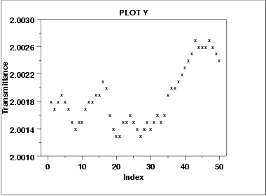

|
1.
Exploratory Data Analysis
1.3. EDA Techniques 1.3.3. Graphical Techniques: Alphabetic
|
|||
|
Purpose: Check for Shifts in Location and Scale and Outliers |
Run sequence plots
(Chambers 1983)
are an easy way to graphically summarize a
univariate data set. A common assumption of univariate data
sets is that they behave like:
|
||
|
Sample Plot: Last Third of Data Shows a Shift of Location |

This sample run sequence plot shows that the location shifts up for the last third of the data. |
||
|
Definition: y(i) Versus i |
Run sequence plots are formed by:
|
||
|
Questions |
The run sequence plot can be used to answer the following
questions
|
||
|
Importance: Check Univariate Assumptions |
For univariate data, the default model is
Even for more complex models, the assumptions on the error term are still often the same. That is, a run sequence plot of the residuals (even from very complex models) is still vital for checking for outliers and for detecting shifts in location and scale. |
||
| Related Techniques |
Scatter Plot Histogram Autocorrelation Plot Lag Plot |
||
| Case Study | The run sequence plot is demonstrated in the Filter transmittance data case study. | ||
| Software | Run sequence plots are available in most general purpose statistical software programs. | ||